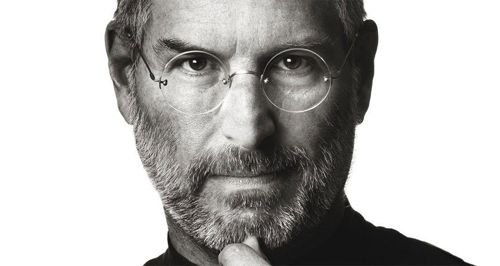
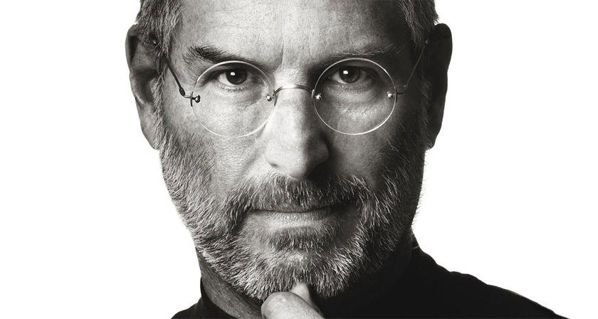

Steve Jobs
(February 24, 1955 – October 5, 2011)
“Don’t let the noise of other's opinions drown out your own inner voice."

(February 24, 1955 – October 5, 2011)

| Dates | Events |
| 24 Feb 1955: | Steven Paul Jobs is born in San Francisco to Joanne Carole Schieble and Abdulfattah Jandali. The then-unmarried couple give up their son to adoption. Paul and Clara Jobs become Jobs' non-biological parents. |
| 1970: | Meets future Apple co-founder Steve Wozniak through a friend. In Wozniak's 2006 autobiography, "iWoz," he notes that the two "hit it off" immediately, despite their four-year age difference. |
| 1972: | Graduates from Homestead High School in Cupertino, Calif., and enrolls at Reed College in Portland, Ore., only to drop out a semester later. Jobs would go on to sit in on classes that interested him, such as calligraphy, despite not getting credit for them. |
| 1976: | Co-founds Apple Computer with Wozniak and Ronald Wayne. That same year, the company sells the Apple I in the form of a kit that sells for $666.66. |
| 3 Jan 1977: | Apple incorporates. |
| 5 Jun 1977: | Releases the Apple II, the first commercially available personal computer in a plastic case with color graphics--and Apple's first successful personal computer. |
| 12 Dec 1980: | Apple goes public, putting Jobs' net worth north of $200 million. |
| 12 Sep 1985: | CEO John Sculley engineers Jobs' ouster from Apple. Jobs resigns as Apple chairman, saying in a board meeting, "I've been thinking a lot, and it's time for me to get on with my life. It's obvious that I've got to do something. I'm 30 years old." Soon thereafter, Jobs starts NeXT Computer (which later becomes NeXT Software), funded by selling $70 million of his Apple stock. An "interpersonal" NeXT workstation, sporting a built-in Ethernet port, is used by Tim Berners-Lee at CERN to become the first server of the World Wide Web. |
| 3 Feb 1986: | For $10 million, buys the Graphics Group division of Lucasfilm that becomes Pixar Animation Studios. |
| 1988: | NeXT Computer releases its first computer. |
| 29 Nov 1995: | Becomes Pixar's president and CEO. Later in the year, Jobs brings Pixar public, one week after the release of "Toy Story," with Tom Hanks doing the voice of Woody and Tim Allen as Buzz Lightyear. The film earns $192 million at the box office. Its success helps make it quite attractive for celebrities to lend their voices to animated characters. |
| 10 Dec 1996: | Returns to Apple, as an adviser, after it buys NeXT for $429 million. |
| 6 May 1998: | Introduces the iMac, which becomes commercially available in August. |
| 9 Jan 2001: | Introduces iTunes, then exclusively for Mac users. "iTunes is miles ahead of every other jukebox application, and we hope its dramatically simpler user interface will bring even more people into the digital music revolution." |
| 24 Mar 2001: | Apple ships the the first version of Mac OS X, code-named Cheetah. |
| 19 May 2001: | Opens Apple's first retail stores in Tysons Corner, Va., and Glendale, Calif. The store designs and personal sales methods proved to be tremendously popular. Apple was running 330 stores worldwide as of July 2011. |
| 23 Oct 2001: | Introduces the iPod: "With iPod, Apple has invented a whole new category of digital music player that lets you put your entire music collection in your pocket and listen to it wherever you go...With iPod, listening to music will never be the same again." Apple's shipped more than 300 million iPods as of October 2011. |
| 1 Aug 2004: | Jobs undergoes surgery to remove a cancerous tumor in his pancreas. |
| 9 Jan 2007: | Drops "Computer" from Apple's name. Introduces the iPhone: "iPhone is a revolutionary and magical product that is literally five years ahead of any other mobile phone...We are all born with the ultimate pointing device--our fingers--and iPhone uses them to create the most revolutionary user interface since the mouse." Apple owns 19.1 percent of the smartphone market as of August 2011, having shipped 108 million iPhones worldwide as of March 2011. |
| 5 Sep 2007: | Introduces the iPod Touch: "The iPod Touch is a landmark iPod, ushering in a whole new generation of features based on its revolutionary multitouch interface and built-in Wi-Fi wireless networking...People are going to be amazed at how thin it is and how much it does." |
| 14 Jan 2009: | Jobs takes a 6-month leave of absence for medical reasons. |
| 27 Jan 2010: | Introduces the iPad. Apple sells 500,000 iPads during their first week on the market and gains 84 percent of the tablet market by the end of the year, with an estimated 12.9 million shipped as of December 10, 2010, and 25 million shipped worldwide as of June 2011. That same month, the company discloses that it has sold 200 million iOS devices |
| 24 Aug 2011: | Resigns from Apple CEO post; becomes chairman. |
Jobs died at his Palo Alto, California home around 3 p.m. on October 5, 2011, due to complications from a relapse of his previously treated islet-cell pancreatic neuroendocrine tumor, which resulted in respiratory arrest.